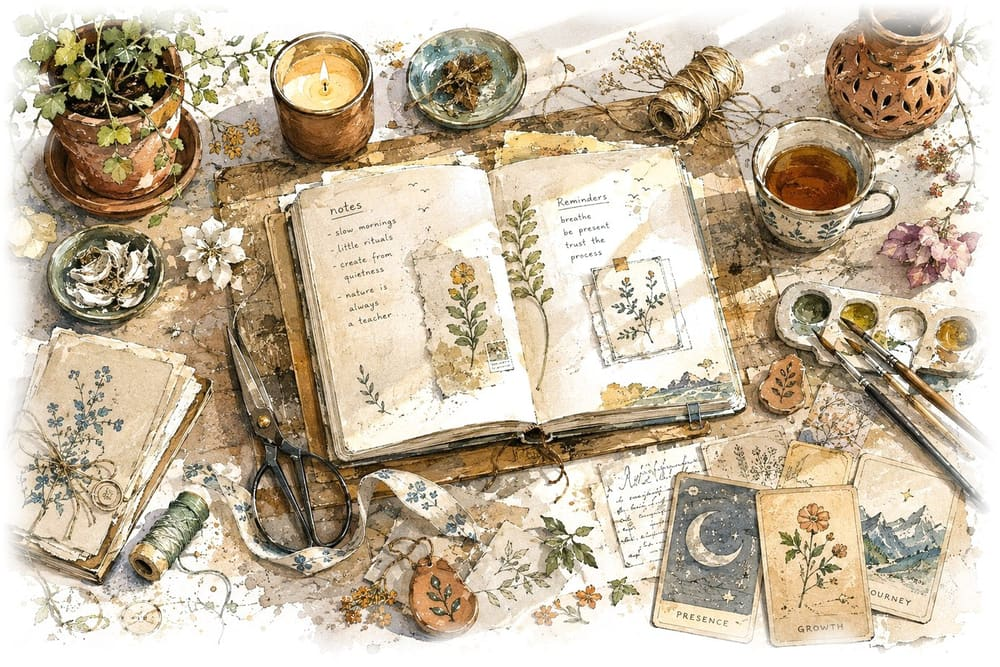

Where artistry, intention and conscious living become a way of life
One source. Multiple mindful offerings — locally and nationally.
The Studio
A soulful space of mindful living, holistic wellness and curated treasures
Shreyaah's Bliss Trails is a vibrant space in Kolkata that offers a
wide range of gifting solutions, self-development programmes, workshops and
cultural events. It is co-created by a mother–daughter duo, and it brings together
traditional craftsmanship, considered design, and eastern–western wellness
traditions to serve a genuinely mixed clientele.
The work is dedicated to creative expression, conscious living and
community. In practice that means two things happening in the same place: objects
made by hand, and sessions held with care — and the belief that these belong
together rather than in separate worlds.
The studio grew out of Designz Life — the handcrafted design and
gifting practice that began in 2013 — and the name still appears on legal,
policy and social channels. More on that history below.
An interconnected ecosystem — creating a life of meaning together
The portfolio
Candles & Diffusers
Hand-poured, scented, and thoughtfully designed.
Home Decor
Coasters, trays, trinket holders, and more.
Stationery
Journals, badges, bookmarks and fridge magnets.
Oracle & Wellness
Card readings, energy healing, and curated wellness collaborations.
Guided by intention
Reimagining Indian craftsmanship
Contemporary, sustainable design
Themed collections
Inspired by literature, art and nature
Holistic practices
Encouraging self-awareness and growth
Supporting local artisans
Conscious collaborations and creative ecosystems

The Founder
Shreyaah Dhiti Ssaha
Draft — please review
Compiled from founder-story content already published in the Studio Diary blog.
Please confirm the full name and spelling, and expand with anything not captured here.
Shreyaah's work with mystical and healing arts began not with an
epiphany but with curiosity. As a child she often sensed there was more to
life than what met the eye — a rhythm, a calling, a knowing. In 2012 she began
formally exploring this through Angel Therapy and Oracle Card Reading, later
studying Reiki, Lama Fera and Access Bars, all while continuing her work as a
designer, artist and entrepreneur.
Her creative story began earlier still — in 2013, sitting in her
room in Kolkata designing fan-art badges and posters for a growing fandom
community. What started as custom fan merchandise grew, through community
conventions and collaborations, into Designz Life: a studio
built on handcrafted design, corporate and personal gifting, and — eventually —
a holistic wellness wing shaped by her own healing journey.
She now works as both a creative director and a holistic guide,
designing product lines under the studio while personally facilitating oracle
readings, energy work and guided sessions. Her approach across both crafts is
the same: intention over perfection, presence over performance.
These are the areas of study named in the studio's own published
writing. They are listed as training and practice, not as formal clinical
qualifications.
Within the Studio
The Blissful Trails
An open journey of harmony, healing, and becoming.
Blissful Trails is the wellness side of the studio — a space where
we work with intuitive guidance, alternative practices and energy work. Sessions
here explore the meeting points of mind, body and soul through oracle readings,
energy healing, meditative practices and reflection.
Whether you are navigating a transition, looking for clarity, or
simply want somewhere unhurried to pause, Blissful Trails offers a place to stop,
reflect and realign.
Where it began
Rebranded in 2025 from Bowl of Bliss, Blissful Trails
reflects the expansion of a vision: to guide people not just to healing sessions,
but toward a journey back to the self.
iOracle card readings that reveal patterns, stories and intuitive insights.
iiChakra guidance to help you tune into and align your inner energy centres.
iiiSpirit and power animal messages that call you to rediscover your strengths and soul allies.
ivBreathwork and grounding rituals for clarity, calm and reconnection.
Blissful Trails is the studio's own framework and brand concept. It draws on named
practices such as Reiki and oracle card reading, but it is not itself an
established external modality, and it is not a substitute for medical, legal,
financial or professional advice.
The Enrichment Clubhouse is a multi-dimensional space designed for
the curious, the conscious and the creative. Here, learning isn't confined to age,
profession or background — it moves through movement, conversation, stillness
and art.
Whether you're looking for growth in your personal journey, a deeper
sense of purpose, or simply a safe place to pause and reconnect, the doors are
open. This is where life slows down so you can grow forward.
A space where all paths cross
From grounding yoga and sound healing to art therapy,
mindful parenting dialogues and creative writing, the offerings are diverse and
still evolving. Professionals find balance through stress-release sessions and
holistic leadership workshops. Creatives explore their edges through journaling
circles, vision board sessions and book club meets. Those spiritually inclined
come for meditation, guided introspection and energy work.
Facilitators with purpose
Every class, session and workshop is guided by certified
practitioners, experienced therapists and experts rooted in their fields — from
trained yoga teachers and licensed art therapists to mindfulness coaches and
holistic wellness professionals, chosen for both their expertise and their
authenticity.
A world where craft, community, and inner work form a regenerative cycle — where
crafters are sustained, users are nourished, and ancestral wisdom thrives in
modern life.
In plainer terms: the people who make things should be able to
keep making them; the people who use them should get something real out of them;
and older ways of knowing should have a place in ordinary contemporary life
rather than being treated as decoration.
Mission
To create purposeful lifestyle products and holistic experiences
that blend sustainable design, artistic expression and mindful practices —
turning everyday moments into meaningful rituals of creativity, connection and
conscious living.
Impact
On measuring what we do
The studio's planning material identifies an intention to
contribute towards the UN Sustainable Development Goals. We have deliberately not
published a row of SDG icons here.
Each proposed connection needs to be researched properly and stated
honestly — what we are actually doing, which goal and which specific target it
relates to, what evidence exists, and whether the relationship is direct or
aspirational. Until that work is complete, claiming it would be decoration
rather than accountability.
To be completed
SDG alignment is marked as an intention in the source material, not a verified
claim. This section is editable and should be replaced once each connection has
been researched and evidenced.
Alongside Us
Partners in Service
A small, trusted circle of collaborators who bring their own depth of expertise
into our sessions, workshops and gatherings.
Draft — verify before publishing
Drawn from collaborators named in existing site content. Exact names, current
relationship status and permission to use names or logos should be confirmed before
this goes live. This is a starting list, not an exhaustive one.
Community Partner
Rotary Club of Calcutta Elevates
We support their social causes by contributing a part
of session fees towards their annual projects. Most recently we have collaborated
on Alaap, where each
participant's contribution also goes towards Rotary Calcutta Elevates' Mother
& Child wellbeing initiative.
Practitioner
Geetu Thackur & the Modern Shamanic Tribe
Family Constellation and shamanic journey work, which has
shaped several of our reflective practices. Geetu also leads
Beyond the Pages, our
guided online book circle.
Practitioner
Sourish Choudhury
A certified holistic facilitator and mindfulness educator
who guides our mindful parenting sessions.
Makers
Artisans and crafters across Bengal
Local makers whose heritage skills bring our terracotta,
jute and handcrafted collections to life.
Still have a question?
The FAQ covers booking, cancellations, shipping,
membership and corporate enquiries. Everything legal sits on its own page.